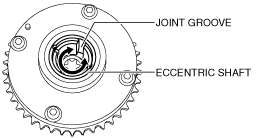

ELECTRIC VARIABLE VALVE TIMING ACTUATOR INSPECTION
id011000555500
Caution
• Do not disassemble the electric variable valve timing actuator because it is a precision unit.
1. Rotate the eccentric shaft of the electric variable valve timing actuator to the left and right by hand and verify that it rotates smoothly.
• If it does not rotate smoothly, replace the electric variable valve timing actuator.

bpe2ue00000097
Note
• Hook a finger onto the joint groove of the eccentric shaft to rotate the shaft easily.
• The eccentric shaft stops rotating at the maximum retard position when it is rotated counterclockwise as viewed from the front, and at the maximum advance position when rotated clockwise.